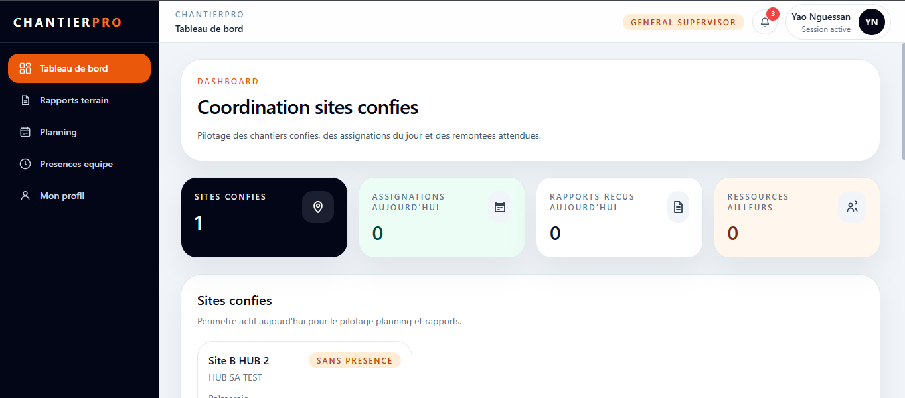
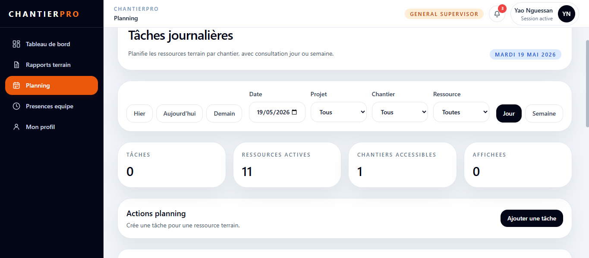
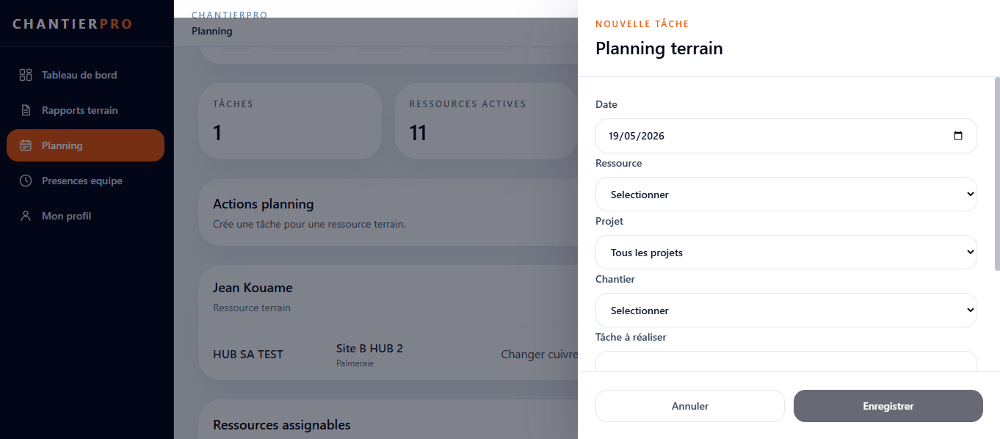
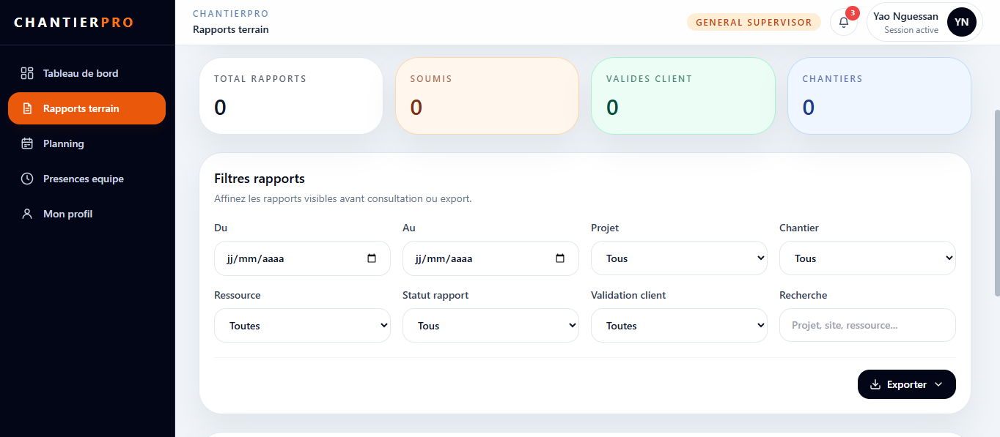
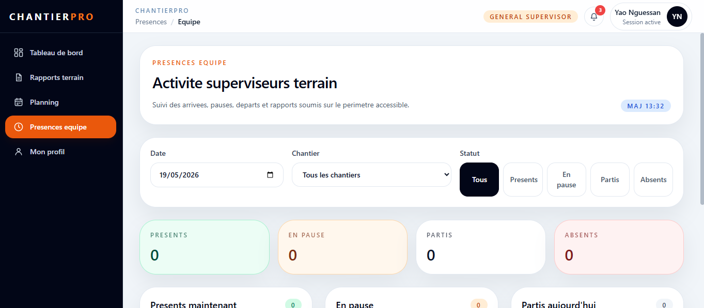
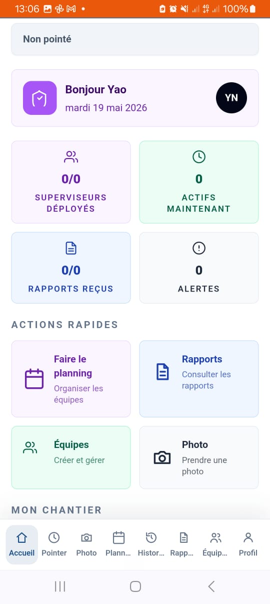
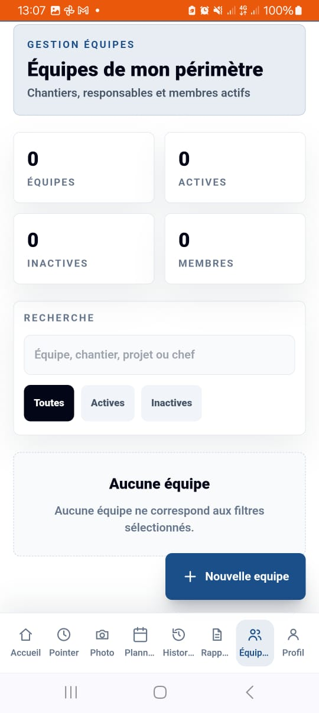

Objectif du role
Le superviseur general organise le travail sur les sites qui lui sont confies. Il planifie les ressources terrain, suit les rapports, gere les equipes et peut aussi etre assigne comme ressource sur un chantier.
Le superviseur general organise le travail sur les sites qui lui sont confies. Il planifie les ressources terrain, suit les rapports, gere les equipes et peut aussi etre assigne comme ressource sur un chantier.
Web : Tableau de bord, Planning, Rapports terrain, Presences equipe, Profil.
Mobile : Accueil, Planning, Equipes, Rapports, Pointer, Photo, Historique, Sync/offline et Profil selon les affectations.

assets/gs-web-dashboard.png
assets/gs-web-planning.png
assets/gs-web-ajout-tache.png
assets/gs-web-rapports.png
assets/gs-web-presences.png
assets/gs-mobile-accueil.jpeg
assets/gs-mobile-planning.jpeg
assets/gs-mobile-equipes.jpeg
assets/gs-mobile-rapports.jpeg
assets/gs-mobile-terrain.jpeg